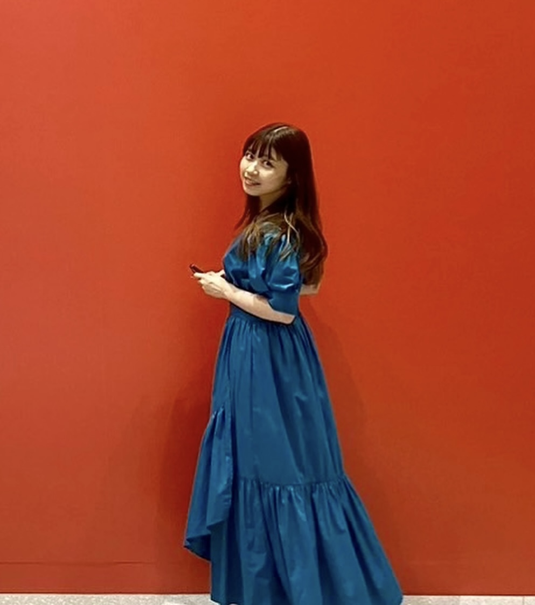

Chise Ishii
Ph.D. Student @ Keio University
Contact: chiseblanton125 [at] keio [dot] jp
I am a second-year Ph.D. student in Computer Science at Keio University, advised by Prof. Yasushi Narushima.
My research interests lie broadly in continuous optimization, dynamical systems, and machine learning, with a focus on applying these techniques to establish theoretical foundations for AI.
I am particularly interested in developing methods to enhance the safety and reliability of neural networks.
Previously, I completed my B.S. and M.S. degrees in mathematics, during which I studied numerical schemes for solving a PDE.
This work naturally led me to develop an interest in optimization algorithms and their theoretical foundations.
Taking the continuous-time limit reveals connections between numerical schemes and optimization algorithms through ODEs / SDEs.
This connection has motivated me to approach my research from a dynamical systems perspective.
Graduate School of Science and Technology,
Keio University,
3-14-1 Hiyoshi, Kohoku-ku, Yokohama, 223-8522, Kanagawa, Japan
